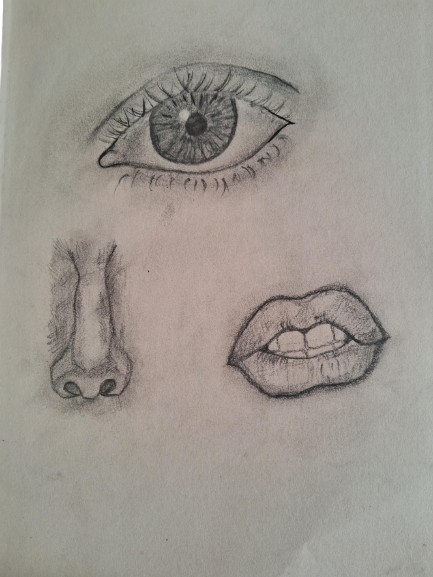
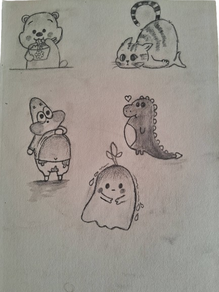
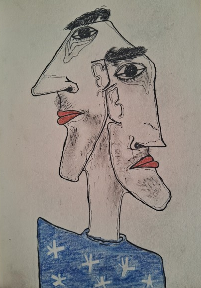
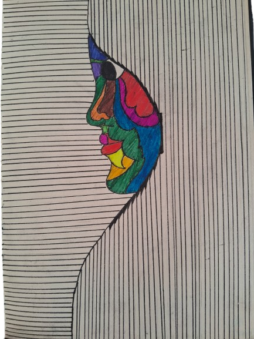
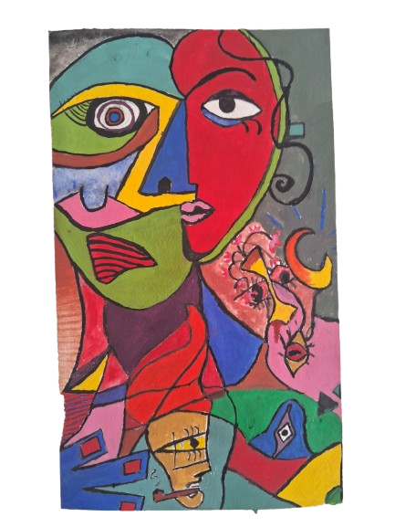

fragments of perception merge, revealing the subtle intricacies of human expression

playful figures dance across imagination's canvas, whispering stories untold

form dissolves into abstraction, challenging the boundaries of human representation

minimalism speaks volumes, where color becomes emotion's whisper

identity fragmented, reassembled through geometric language of perception
divine feminine emerges, transcending form through vibrant chromatic energy